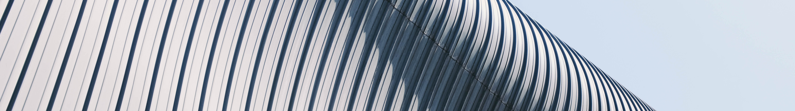

Home
Damir Akchurin
PhD student
Civil and Systems Engineering
Johns Hopkins University
About me
My name is Damir Akchurin. I’m a PhD student at the Civil and Systems Engineering department of the Johns Hopkins University in Baltimore, MD.
My current research focuses on the development of an optimization scheme that produces a family of optimized cold-formed steel lipped channel sections considering reduced stiffness and strength due to cross-sectional instabilities such as local and distortion buckling. My earlier research focused on the investigation the effects of perforations on the buckling behavior of cold-formed steel members.
In my free time, I enjoy working on various coding projects, read interesting books, and play tennis.
Interests
- Structural Analysis and Design
- Thin-Walled Structures
- Advanced High-Strength Steel
- Cold-Formed Steel
- Soil-Structure Interaction
Education
- PhD, Civil Engineering
- Johns Hopkins University
- MSE, Civil Engineering
- Johns Hopkins University
- BS, Civil Engineering
- SUNY Polytechnic Institute